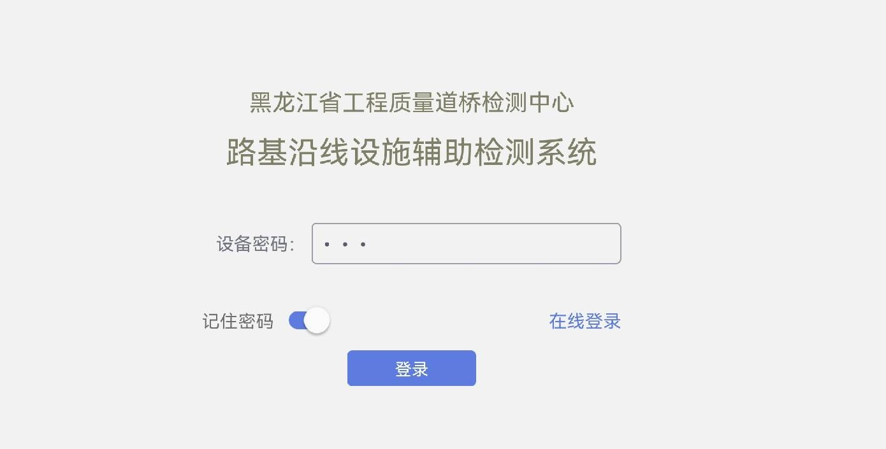
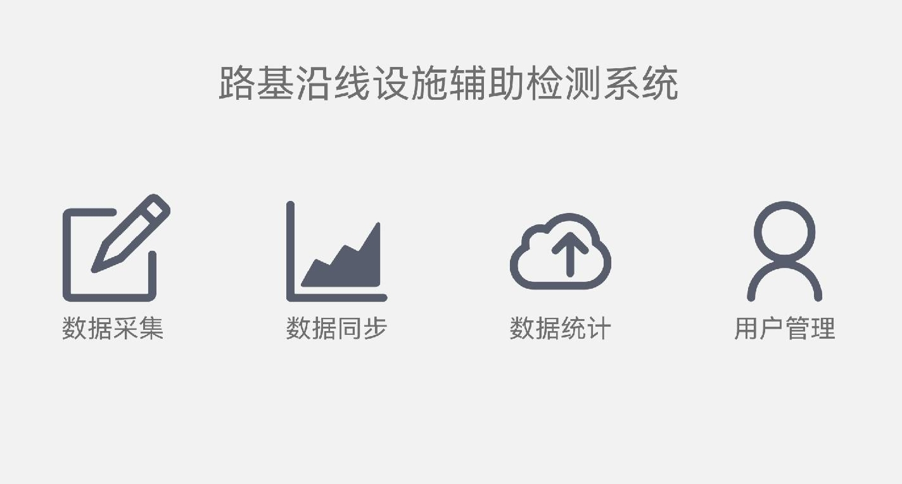

概述
概述#
本软件为路基沿线检测APP，主要用于对道路上病害数据的采集和上传。软件根据JTG 5210-2018《公路技术状况评定标准》 制定需求，目前已实现对路基和沿线设施各类病害数据的存储与上传，使用户在检测时更方便快捷，更高效的处理检测数据。同时软件通过不断的测试优化后， 如今已具有良好的易用性和可靠性，并保证信息的安全性和保密性。本软件目前只可在Android系统上运行。
登录
安装完成后，在登录软件前，最好先将平板的显示设置为屏幕常亮。 然后使用提供的初始账号与密码进行登录，第一次登录成功后需设置用户名及设备密码。后续登录软件时，可选择使用初始账号登录或设备密码登录，但是在离线环境下只能使用设备密码登录。

图1 登录
导航栏
登录成功后进入软件导航页，将软件功能划分为4个模块，分别是数据采集、数据同步、数据统计和用户管理。在该页面会有一次GPS授权，使用数据采集功能需有GPS权限。进入各功能页面后导航栏缩小在上下栏，点击房子图标回到导航页。

图2 导航栏